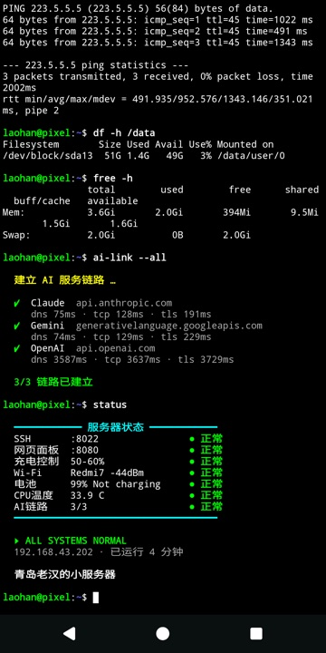
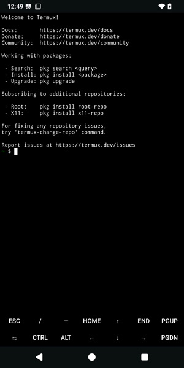

Pixel 2 XL 变小服务器：刷机与搭建全记录
Google Pixel 2 XL（taimen / 骁龙 835）· Android 11 → LineageOS 22.2（Android 15）+ Magisk + Termux · 2026-10-17
0概览
目标和红米那台相同：常年插电、能上网、屏幕正常显示的局域网小服务器，开机画面也做成同样的风格。
| 功能 | 说明 |
|---|---|
| 系统 | LineageOS 22.2（Android 15，安全补丁 2026-10），官方 nightly 版 |
| root | Magisk v30.7 |
| 远程登录 | ssh -p 8022 192.168.43.202（Termux，密钥登录） |
| 状态网页 | http://192.168.43.202:8080 |
| 电池保护 | 保持在 50%–60% |
| 开机界面 | 自定义开机动画（图片 + 进度条 + 声音）、开机后 Termux 自动演示 |

设备信息
| 项目 | 值 |
|---|---|
| 型号 / 代号 | Pixel 2 XL / taimen（和 Pixel 2 walleye 共用 wahoo 源码） |
| 芯片 / 内存 / 存储 | 骁龙 835 / 4 GB / 64 GB |
| 屏幕 | 1440 × 2880（18:9） |
| 原系统 | Android 11 RP1A.201005.004.A1（Google 最后一个官方版本） |
| 分区 | A/B 双槽位，没有独立的 recovery 分区（recovery 在 boot 里） |
命令前的标签：MAC Mac 终端；ADB 手机系统里（adb shell）；RECOVERY 手机在 LineageOS Recovery 时；TERMUX 手机的 Termux 里。
1和红米的区别
| 红米 Note 2（Android 7） | Pixel 2 XL（Android 15） | |
|---|---|---|
| SELinux | 宽松模式（permissive） | 强制模式（enforcing）：自己加的系统服务会被拒绝 |
| 系统分区 | 直接可写 | 只读，有完整性校验；改动要用 adb remount |
| 后台服务 | 自定义 init 服务 | Magisk 的 service.d 开机脚本 |
| 充电控制 | /proc/mtk_battery_cmd/current_cmd | battery/charging_enabled（骁龙标准接口） |
| 开机动画位置 | /system/media | /product/media |
| 开机第一屏 | logo 分区，可以改 | 写在带签名的 bootloader 里，改不了（见第 15 节） |
| 开机声音 | 放进动画包就能响 | 要额外补一条 SELinux 规则（见第 13 节） |
2检查能否解锁
ADBadb shell getprop ro.product.device # taimen
adb shell getprop ro.oem_unlock_supported # 1 = 支持 OEM 解锁
adb shell getprop ro.boot.cid # 00000000 = Google 商店版；VZW__001 = Verizon 版（锁死）
adb shell getprop ro.build.display.id # RP1A.201005.004.A1 = Android 11 最终版
adb shell getprop sys.oem_unlock_allowed # 开发者选项里"OEM 解锁"打开后变成 1- 最关键的是
cid：Verizon 运营商版的 bootloader 锁死，无法刷机。 - LineageOS 要求底层固件是 Android 11 最新版，这台出厂停在这一版，正好满足。
- 在手机上打开 OEM 解锁：设置 → 关于手机 → 连点"版本号"7 次 → 设置 → 系统 → 开发者选项 → OEM 解锁。这个开关需要手机联网才能打开。
3下载并校验
MACcurl -s https://download.lineageos.org/api/v2/devices/taimen/builds | jq '.[0].files[] | {filename, sha256, url}'- LineageOS 官方 API 会列出最新版本的所有文件、下载地址和 SHA256。这次用的是
20261015nightly。 - 只需要两个文件：
lineage-22.2-…-taimen-signed.zip（刷机包，969 MB）和boot.img（LineageOS Recovery，40 MB）。
D=/Volumes/SSD1G/download/pixel2xl-lineage; mkdir -p $D; cd $D
curl -fLO https://mirrorbits.lineageos.org/full/taimen/20261015/lineage-22.2-20261015-nightly-taimen-signed.zip
curl -fLO https://mirrorbits.lineageos.org/full/taimen/20261015/boot.img
shasum -a 256 -c files.sha256 # 每行 "sha256 文件名"，来自上面的 API4解锁 bootloader
adb -d reboot bootloader # 重启到 bootloader（或关机后按住 音量下 + 电源）
fastboot getvar all # is_oem_unlocked: yes / unlocked: no / version-bootloader: TMZ30m
fastboot flashing unlock # 手机上会弹出确认界面- 手机显示 "Unlock the bootloader?"：先按 音量键 选到 Unlock the bootloader，再按 电源键。
- 界面底部 "Device state" 变成 unlocked 就成功了。
Set device unlocked! canceled，手机没有变化，重新执行一次即可。坑 2：解锁成功后，
fastboot getvar unlocked 仍然显示 no，要重启一次才会刷新。以屏幕上显示的 "Device state" 为准。5刷 LineageOS Recovery
MACfastboot flash boot boot.img # 写入当前槽位（boot_b）- Pixel 2 XL 没有独立的 recovery 分区，recovery 在 boot 镜像里，所以刷的是
boot。 - 如果 bootloader 没解锁，这一步会被直接拒绝，所以它也能顺便验证解锁是否成功。
进入 Recovery：这台的 bootloader 不响应 fastboot reboot recovery，要在 bootloader 界面用 音量键 选 Recovery mode，再按 电源键。
6安装 LineageOS 22.2
- Recovery 里选 Factory reset → Format data / factory reset，清掉原来 Android 11 的加密数据。
- 回主菜单，选 Apply update → Apply from ADB。
adb -d sideload lineage-22.2-20261015-nightly-taimen-signed.zipsideload：Mac 一边传，手机一边安装。手机端会校验 LineageOS 的官方签名。- 装完后，adb 有时会一直不退出或显示 47%，这是正常现象，以手机屏幕上的提示为准。
- 提示 "to install additional packages, you need to reboot recovery first" 时选 No（不装 Google 应用）。
- 选 Reboot system now。第一次开机可能要几分钟。
7首次开机
新系统默认关闭了 USB 调试。打开方法：设置 → 关于手机 → 滑到底部，连点 "版本号"（不是"Android 版本"）7 次 → 设置 → 系统 → 开发者选项 → USB 调试。
ADBadb shell getprop ro.lineage.version # 22.2-20261015-NIGHTLY-taimen
adb shell getprop ro.build.version.security_patch # 2026-10-01
adb shell getprop ro.boot.slot_suffix # _a：刷机包装到了另一个槽位
adb shell getprop ro.boot.verifiedbootstate # orange = bootloader 已解锁8安装 Magisk（root）
LineageOS 是 userdebug 版本，插 USB 时可以用 adb root。但要让后台服务开机自动以 root 运行，需要 Magisk。这次没有用 Magisk 应用的图形界面，而是在命令行里修补 boot。
curl -fLO https://github.com/topjohnwu/Magisk/releases/download/v30.7/Magisk-v30.7.apk
adb root
adb exec-out 'dd if=/dev/block/by-name/boot_a bs=1048576' > backup/boot_a-stock-lineage.img # 先备份- 导出的 boot_a 和官方下载的
boot.imgmd5 完全一致，说明手机上用的就是这个版本。
# 从 APK 里取出修补工具：lib/arm64-v8a/libXXX.so 改名为 XXX，加上 assets 里的脚本
unzip Magisk-v30.7.apk 'lib/arm64-v8a/*' assets/boot_patch.sh assets/util_functions.sh assets/stub.apk
for n in magiskboot magiskinit magisk init-ld busybox magiskpolicy; do cp lib/arm64-v8a/lib$n.so out/$n; done
adb push out/. /data/local/tmp/mg/
adb push backup/boot_a-stock-lineage.img /data/local/tmp/mg/boot.imgcd /data/local/tmp/mg && chmod 755 *
KEEPVERITY=false KEEPFORCEENCRYPT=true ./busybox sh boot_patch.sh boot.img # 生成 new-boot.imgboot_patch.sh就是 Magisk 应用"修补文件"时运行的脚本。KEEPVERITY=false：关闭分区完整性校验。后面用adb remount改写系统分区需要这一项。
adb pull /data/local/tmp/mg/new-boot.img boot_a-magisk-v30.7.img
adb reboot bootloader
fastboot flash boot_a boot_a-magisk-v30.7.img
fastboot reboot
adb install -r Magisk-v30.7.apk8.1 补齐 Magisk 运行文件（关键）
ADBcd /data/local/tmp/mg
cp busybox magisk magiskboot magiskinit magiskpolicy init-ld util_functions.sh boot_patch.sh stub.apk /data/adb/magisk/
chmod 755 /data/adb/magisk/*/data/adb/magisk 里放运行工具。正常情况下这一步由 Magisk 应用完成。少了这些工具，Magisk 每次开机只执行最后的 "boot-complete" 阶段，开机脚本和模块全部被跳过，也不会报错。日志里只有 boot-complete triggered 一行就是这个症状。9Termux 与 SSH
MACadb install -r com.termux_1002.apk # F-Droid 版 Termux 0.118.3
adb shell pm list packages -U com.termux # uid:10207
adb shell am start -n com.termux/.app.TermuxActivity # 首次打开，解压基础环境9.1 以 Termux 用户身份执行命令
ADB/debug_ramdisk/su 10207 -g 10207 -G 3003 -c 'PREFIX=… HOME=… PATH=$PREFIX/bin:/system/bin …; 命令'/debug_ramdisk/su：Magisk 的 su。adb root 的命令搜索路径里没有它，要写完整路径。10207：切换到 Termux 的用户。-G 3003：加入 inet 组。Android 只允许这个组的进程联网。-g 10207：必须写。没有-g时，-G的第一个组会被当成主组。漏写这一项时，命令曾经卡住不动。
pkg update -y && pkg install -y openssh python jq neofetch procps
sshd # 端口 8022ssh -p 8022 192.168.43.2029.2 SELinux 标签问题
app_data_file:s0，少了 Termux 专属的分类 c207,c256,c512,c768。Termux 应用运行在普通应用的权限域里，读不了这些文件，于是报错 CANNOT LINK … libncursesw.so.6 not found。而 SSH 跑在 Magisk 的权限域里，一切正常，所以这个问题很隐蔽。chcon -R -h u:object_r:app_data_file:s0:c207,c256,c512,c768 /data/data/com.termux/files-h不能省：不加的话，只会改符号链接指向的文件，链接本身的标签不变，libncursesw.so.6这个链接仍然读不了。- 这条命令已经写进守护服务，每次开机都会执行一次。
10后台服务
| 文件（工程里） | 装到手机上 | 作用 |
|---|---|---|
magisk/service.sh | /data/adb/service.d/pixelsrv.sh | 开机入口：等开机完成，启动下面三个脚本 |
magisk/phonectl.sh | /data/adb/pixelsrv/ | 充电限制；每 15 秒写出 Wi-Fi、IP 等信息给网页用 |
magisk/termux-services.sh | /data/adb/pixelsrv/ | 修正标签；守护 sshd 和网页服务；持有唤醒锁 |
magisk/termux-intro.sh | /data/adb/pixelsrv/ | 开机后全屏打开 Termux 演示 |
magisk/bootsound.sh | /data/adb/post-fs-data.d/ | 让开机声音能播放（第 13 节） |
cd ~/ai_claude/pixel2xl-server
./deploy.sh root # 推送 Magisk 脚本，同时设置插电常亮、关闭锁屏、Termux 加入省电白名单
./deploy.sh web # 通过 SSH 推送网页服务、开机演示、Termux 设置网页服务和红米共用同一套代码，读取方式做了兼容：骁龙的温度传感器取最热的 tsens_tz_sensor* 作为 CPU 温度，并自动识别 °C、0.1°C、0.001°C 三种单位；电压读 voltage_now（µV）；版本读 ro.lineage.version。
11充电限制 50–60%
ADBecho 0 > /sys/class/power_supply/battery/charging_enabled # 停止给电池充电，USB 继续给手机供电
echo 1 > /sys/class/power_supply/battery/charging_enabled # 恢复充电
cat /sys/class/power_supply/battery/status # Not charging / Chargingcharging_enabled 改回 1。重新插拔 USB 时也会。解决：
phonectl.sh 每 15 秒核对一次，被改回就重新写入，并记录日志：charging_enabled was reset by the system; re-applied 0。日志：/data/adb/pixelsrv/phonectl.log。修改区间：在 /data/adb/pixelsrv/phonectl.conf 里写 CHARGE_LOW=…、CHARGE_HIGH=…。
12开机动画
MACW=1440 H=2880 tools/build_bootanim.sh assets/images/bootanim-v2-portrait.png \
/Volumes/SSD1G/download/pixel2xl-lineage/bootanimation-pixel.zip assets/audio/phone_boot.mp3
./deploy.sh bootanimW=1440 H=2880：Pixel 的屏幕是 18:9，比图片更瘦长。脚本会按宽度缩放图片，上下补黑边，进度条按比例放大并放在底部。deploy.sh bootanim：先备份原版，然后adb remount，直接写入/system/product/media/bootanimation.zip。bootanimation-dark.zip是指向bootanimation.zip的链接。LineageOS 在深色主题下播放 dark 版，两个都会生效。
…/part2，而我们的包里只有 part0 和 part1，这就是破绽。解决：改用
adb remount 直接写入系统分区。13开机声音
声音文件 audio.wav 放在动画包的 part0 里，但在 Pixel 上一开始完全不响。排查过程：
- 开机时实时记录日志（开机阶段日志量太大，事后看会缺条目）。日志显示：
found audio.wav→Audio service is not ready yet→cannot play clip without a player。 - 同一时刻，用
service check audio查询，服务明明已经存在。 - 内核日志找到真正的原因：
avc: denied { find } … name=audio scontext=u:r:bootanim:s0 tcontext=u:object_r:audio_service:s0。SELinux 不允许开机动画进程查询 audio 服务，所以它永远认为音频服务没准备好。原版 LineageOS 22.2 在这台手机上本来就放不了开机声音。
# magisk/bootsound.sh 的核心（在 Magisk 最早的 post-fs-data 阶段运行）
/data/adb/magisk/magiskpolicy --live "allow bootanim audio_service service_manager find"
# 等 audio 服务出现，并且开机动画还在播放，就重启开机动画一次
service check audio | grep -q ": found" && setprop ctl.restart bootanimmagiskpolicy --live：在运行中的 SELinux 策略里加一条规则，只允许开机动画查询 audio 服务，不放开其他权限。- 重启开机动画：第一次启动时 audio 服务还不存在，重启后的开机动画才能查到它，并创建播放器。
Created buffer queue player → playClip → 11.6 秒后 destroying audio player），音乐和进度条同时开始。代价：创建播放器要等大约 10 秒，这段时间画面会停住，整个开机过程约 34 秒。还没确认：耳朵实际能否听到。bootsound.sh 里仍然开着实时日志记录（/data/adb/pixelsrv/bootanim-live.log），确认后可以关掉。play-audio 以 root 身份播放，进程启动了，但听不到声音，而且不会自己退出。用系统音乐播放器 Twelve 手动播放 /sdcard/Download/phone_boot.mp3 能听到，说明扬声器和音量都正常。14开机 Termux 演示
和红米相同的演示脚本（termux/bin/boot-intro）：逐字"敲出"常用命令 → 真实连接 Claude、Gemini、OpenAI 的 API 服务器 → 7 项状态面板。提示符根据机型自动显示 laohan@pixel。
# Android 8 以后不允许在后台直接启动其他应用的服务，要用 start-foreground-service
am start-foreground-service --user 0 -n com.termux/com.termux.app.RunCommandService \
-a com.termux.RUN_COMMAND --es com.termux.RUN_COMMAND_PATH /data/data/com.termux/files/home/bin/boot-intro \
--ez com.termux.RUN_COMMAND_BACKGROUND false
locksettings set-disabled true # 关闭锁屏，否则 Termux 被挡住untrusted_app 权限域里。虽然是同一个用户，SELinux 也不允许查看对方的进程，所以 pgrep 找不到 sshd。解决：改为直接连接 8022 端口来检测：
bash -c "exec 3<>/dev/tcp/127.0.0.1/8022"。
15第一屏为什么改不了
ADBls /dev/block/by-name/ | sed 's/_[ab]$//' | sort -u # 没有 logo、splash 这类分区- 开机的 Google 标志和"已解锁"警告页，是 bootloader（
abl、xbl）自己画的，图片打包在 bootloader 程序里。 - 手机芯片里熔断写入了 Google 的签名公钥，开机时会验证 bootloader 的签名。改动一个字节，签名就对不上，手机无法开机，而且很难救回来。
- 自己编译整个系统也没用：Android 源码里没有 bootloader，Google 只提供编译好的文件。
- 红米能改，是因为联发科把 logo 放在一个独立的、不检查签名的分区里。
- 唯一能动的：用自己的密钥签名系统并重新锁上 bootloader，可以把橙色警告换成黄色提示，但同样去不掉，而且有变砖风险，不值得。
16日常维护
| 要做的事 | 命令 |
|---|---|
| 登录 | ssh -p 8022 192.168.43.202 |
| 看状态 | http://192.168.43.202:8080 或 ./deploy.sh status |
| 改网页或开机演示 | ./deploy.sh web |
| 改 Magisk 脚本 | ./deploy.sh root，然后 adb reboot |
| 换开机动画或声音 | 换掉 assets/ 里的文件 → 第 12 节的两条命令 |
| 装了新的 Termux 软件包（通过 su） | 重启一次，或手动执行第 9.2 节的 chcon -R -h … |
| 取消 root | fastboot flash boot_a backup/boot_a-stock-lineage.img |
| 还原开机动画 | adb remount，push backup/bootanimation-lineage22-stock.zip |
./deploy.sh bootanim。17踩坑汇总
| 现象 | 原因 | 解决 |
|---|---|---|
| 解锁返回 canceled | 在确认界面直接按了电源键，默认是"不解锁" | 先用音量键选 Unlock |
| 解锁后 getvar 仍是 no | bootloader 缓存的状态值 | 以屏幕显示为准，或重启后再看 |
fastboot reboot recovery 没反应 | bootloader 不支持这条命令 | 用音量键选 Recovery mode |
| 开机后 adb 看不到手机 | 新系统默认关闭 USB 调试；开了之后 USB 没刷新 | 开启 USB 调试，拔插 USB 线 |
| Magisk 开机脚本、模块都不生效 | 命令行修补后 /data/adb/magisk 是空的 | 手动放入运行工具 |
| su 切换到 Termux 用户后卡住 | -G 的第一个组被当成主组 | 同时写 -g 10207 -G 3003 |
| Termux 里 bash 报 CANNOT LINK | su 创建的文件缺少应用的 SELinux 分类 | chcon -R -h …:c207,… |
| 充电控制失效 | 系统充电服务把开关改回 1 | 每 15 秒核对并重新写入 |
| 开机动画还是原版 | Magisk 模块挂载得比开机动画晚 | adb remount 直接写入 |
| 开机没有声音 | SELinux 禁止开机动画查询 audio 服务 | magiskpolicy --live + 重启开机动画 |
| 状态面板 SSH 未运行 | Termux 应用看不到 Magisk 权限域的进程 | 改为检测 8022 端口 |
| fastfetch、Termux:API 不可用（红米） | — | Pixel 上不需要：信息由 root 脚本读取 |
18文件位置
| 内容 | 位置 |
|---|---|
| 工程（GitHub 私有仓库） | ~/ai_claude/pixel2xl-server/ |
| 素材：开机图片、开机音乐 | assets/images/、assets/audio/ |
| Magisk 脚本 | magisk/ |
| 网页服务 / 开机演示 / Termux 设置 | termux/ |
| 刷机包、boot、Magisk APK | /Volumes/SSD1G/download/pixel2xl-lineage/（太大或是第三方文件，不放进 git） |
| 备份：原版 boot、修补后的 boot、原版开机动画 | /Volumes/SSD1G/download/pixel2xl-lineage/backup/ |
| 手机上的日志 | /data/adb/pixelsrv/phonectl.log、bootsound.log、bootanim-live.log |